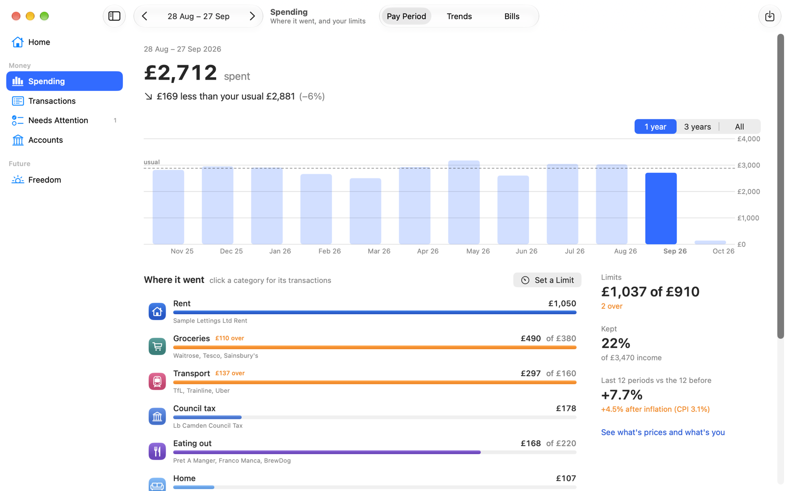
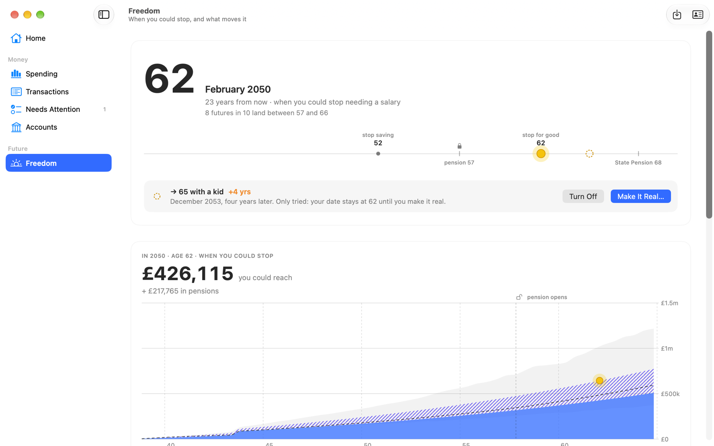
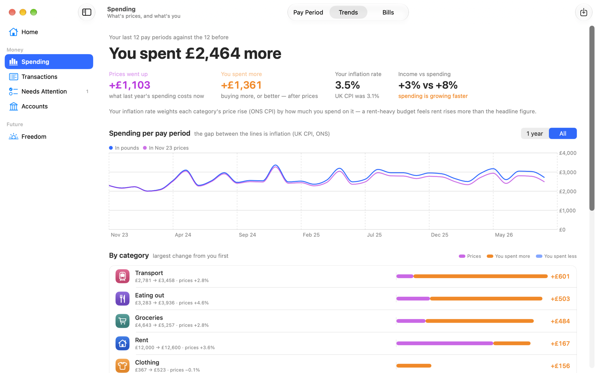

Where does it all go?
Import a statement and nearly every payment is placed for you: groceries, bills, eating out, transfers between your own accounts. What it can’t place, it asks about once, and remembers.
- Each pay period, payday to payday, against what you usually spend
- Bills: everything that leaves every month, and which are creeping up
- Limits on the category they limit, priced in what they buy: “£220 instead of your usual £298: about 7 months sooner”

When could you stop working?
Three questions (your age, your pay and pension, roughly what you hold elsewhere) and Sooner finds your date. It runs on what you actually take home and spend, measured from your statements, so there’s very little to guess.
- The range around your date, from a thousand possible futures for the markets
- Pensions shown locked until they open
- Every number says where it came from: measured, you said, or assumed
Try the big things first.
A kid. A flat. Four days a week. A year out. A market crash. Try any of them and see what it does to your date, in time, with the hidden costs named. Trying never changes your plan. When it’s real, make it real: one deliberate step, with a receipt and an undo.

Prices, or you?
Spending more than last year? Trends weighs every category’s price rise, from the UK’s own inflation figures, by how much you spend on it, and shows what’s prices and what’s you.

Stays on your Mac.
No account, no bank login, no cloud, no tracking. Sooner reads the statement files you choose and keeps everything on your Mac. It can’t send your numbers anywhere: it has no network access at all.
Explore everything first with three years of sample statements: no bank needed.
Read the privacy policy